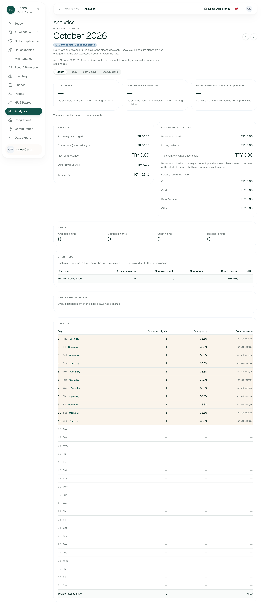
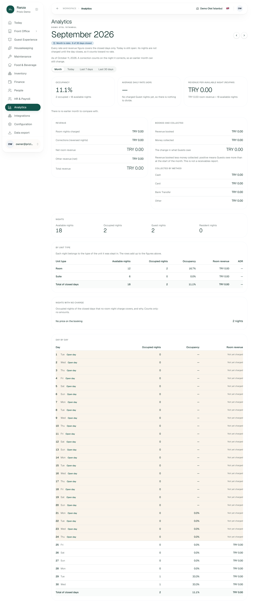
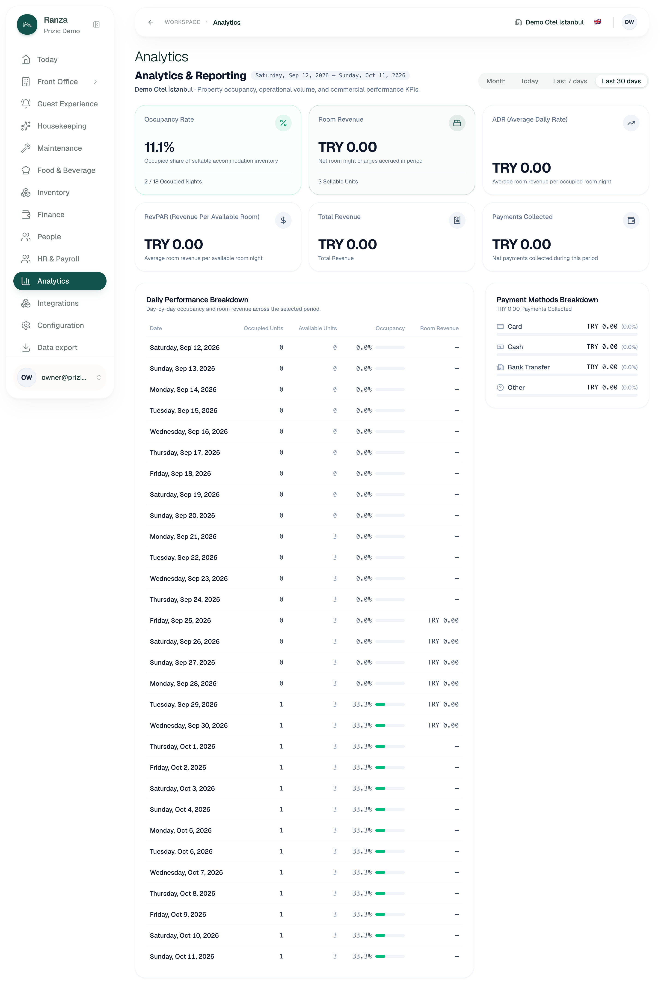
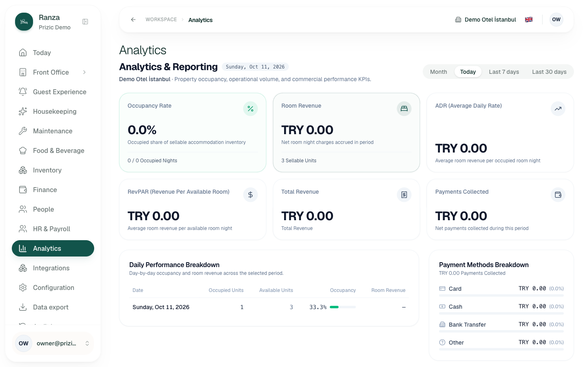
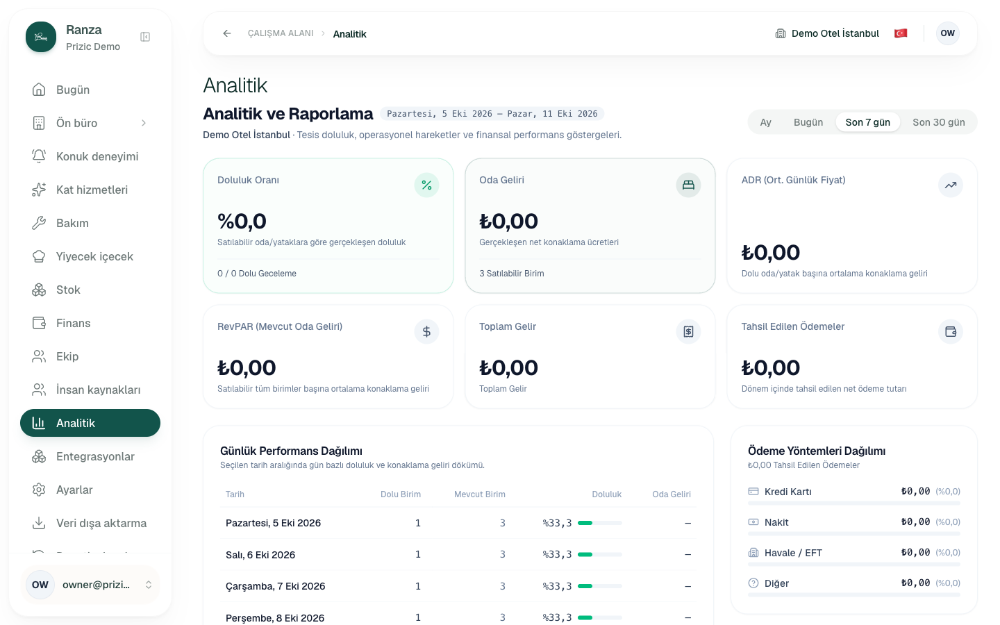
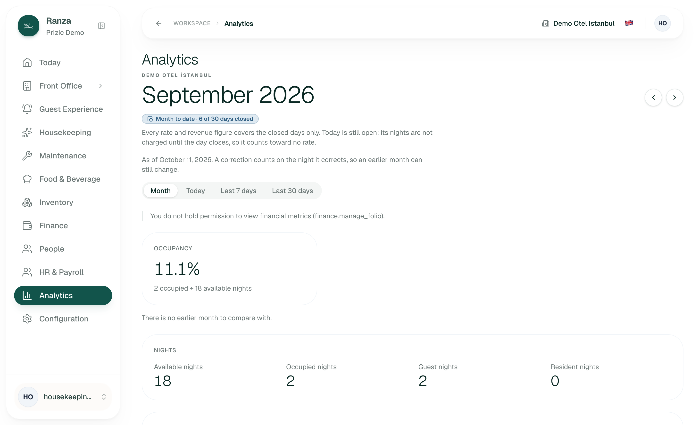
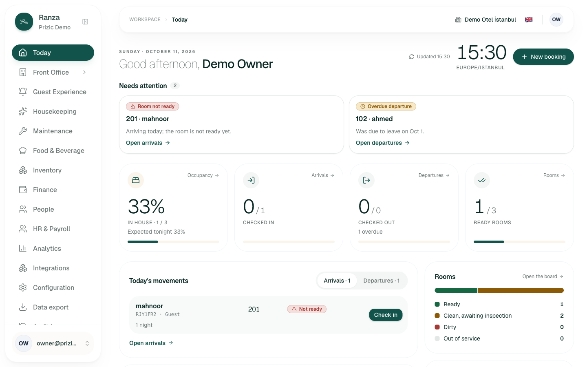
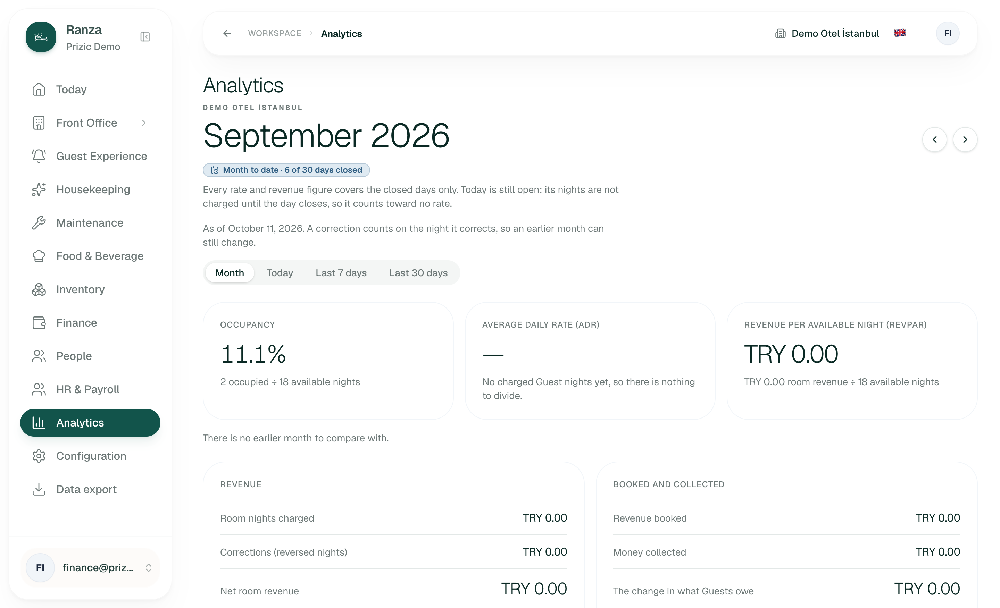
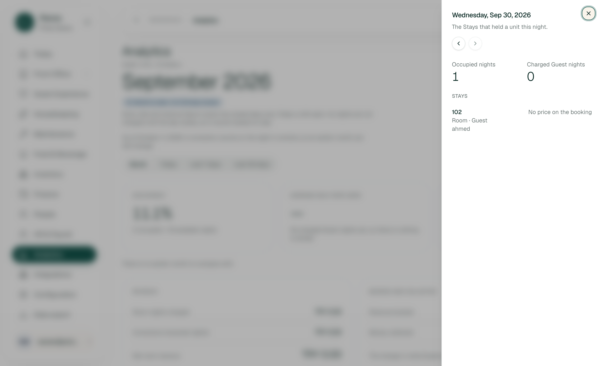
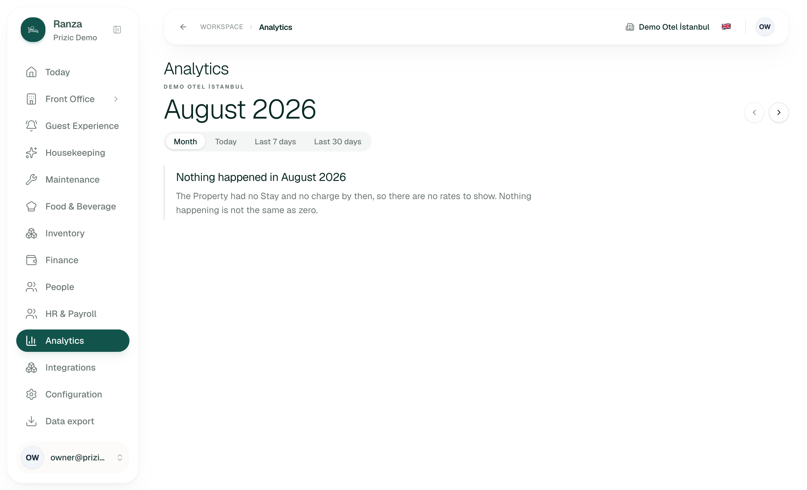

UX audit: Analytics
1. Verdict
Not yet: the owner cannot trust the screen the way it is shipped, and the manager cannot use the daily views at all. The month report is well designed (every headline shows its division, dash versus zero is handled, an empty month says so), but on this data it shows September, a finished month, as "Month to date, 6 of 30 days closed", and October as three dashes. The three trailing-window tabs (Today, Last 7 days, Last 30 days) are a second, older design that contradicts both the Today page and its own table.
Biggest risk: a number that looks authoritative and is wrong. The "Today" tab reads 0.0%, 0 / 0 occupied nights while the Today page reads 33% in house and the row directly beneath it reads 33.3%. The "Last 7 days" tab reads 0.0% above seven rows of 33.3%. Revenue per available night reads "TRY 0.00" while two occupied nights have no price, so an unknown is shown as a measured zero.
What is real: every figure on this Property is zero
or dashes because the staging data has no priced night, no payment, no
charge and only 6 closed days. I could verify structure, wording,
roles, locales and cross-page agreement, but not that ADR, RevPAR,
corrections, other revenue or payment methods are right with real
money. The browser specs in edge-cases.csv (AN-S4-*)
claim to prove those; I did not re-run them.
Counts: 14 findings: 0 block work, 7 cause errors, 5 slow me down, 2 polish. Unaided use by the owner: a month with all days closed would probably work; today's data does not.
2. Findings
| ID | Severity | Where (route, role, data) | What happened | What I expected | Suggested fix | Effort | Evidence | Status |
|---|---|---|---|---|---|---|---|---|
| ANALYTICS-01 | causes errors |
?range=today|7d|30d, Owner, EN and TR. 11 days
since Oct 1 are unclosed; one guest in house every night.
|
Headline occupancy covers closed days only; the table beneath includes open days. Today tab: 0.0%, "0 / 0 Occupied Nights", table row 33.3%. Last 7 days: 0.0%, "0 / 0", seven rows of 33.3%. Last 30 days: 11.1% (2 / 18) above a table with 13 occupied nights. The Today page says Occupancy 33%, in house 1 / 3. None of these views says "closed days only". | The Today tab to say 33% like the Today page and like its own row. If a figure excludes open days, the page must say so, as the month view does ("closed days only, N of M"). | Occupancy does not need a charge: count open days in occupancy (the month table already shows 33.3% for them). Keep ADR/RevPAR closed-days-only and say so with the same badge the month view uses. Better: retire the old component and make the windows a month-view variant. | M | 16, 14, 03, 17 (Today page) | verified reproduced Y (EN, TR) |
| ANALYTICS-02 | causes errors | Month Sep 2026 and all trailing windows, Owner/Manager/Front Desk. 2 occupied nights, both "No price on the booking". | Unknown shown as zero. Month view: RevPAR "TRY 0.00 room revenue ÷ 18 available nights" and Room revenue "TRY 0.00" while 2 of 2 occupied nights have no price. ADR is correctly "—". Trailing windows: ADR is "TRY 0.00" (month view says "—" for the same data). Total revenue "TRY 0.00", Payments "TRY 0.00". | An unpriced night is not a night that earned zero. RevPAR and revenue should carry a warning next to the number ("2 occupied nights have no price; revenue is understated"), and ADR should be "—" in every view. | When uncharged nights > 0, put one line under RevPAR, Net room revenue and Total revenue linking to the "Nights with no charge" section. Make the trailing windows use the same dash rule. | S | 02, 03 | verified reproduced Y |
| ANALYTICS-03 | causes errors |
?month=2026-09 (a finished month), all four roles.
6 of 30 days closed.
|
September is labelled "Month to date · 6 of 30 days closed" and says "Today is still open: its nights are not charged until the day closes". It is a past month. 24 of 30 rows say "Open day · Not yet charged", including Sep 1 to 20 when the Property had no units (available = 0) and Sep 21 to 24, which the Close day screen does not list as waiting (it starts at Oct 1) and does not list as closed (its history starts Sep 25). | A finished month with unclosed days should say "Incomplete: 24 of 30 days were never closed" and name the reason. Days before the Property had any unit should read "Before opening", not "Open day". The "Today" sentence is wrong for any month but the current one. |
Derive the badge from whether the month has ended, not from "any
day not closed" (cause: server/analytics.ts sets
state "open" whenever
closedDays.length !== monthDays.length). Add a
state for "ended, incomplete". Mark pre-opening days.
|
M | 02, 04 | Label and rows verified; cause inferred from code. Reproduced Y (4 roles) |
| ANALYTICS-04 | causes errors |
Default landing /en/analytics = October 2026,
Owner. 0 of 31 days closed, 10 days waiting on Close day.
|
The first thing the owner sees is three dashes and a column of TRY 0.00. The note blames only today ("Today is still open"), but 11 days are open, 10 of them waiting for someone to close them. The page never says that, and never links to Close day. | "10 days are waiting to be closed, so October has no figures yet" with a link to Close day for roles that may close. For other roles, name who closes the day. | Read the waiting-days count (Close day already computes it) and show it in the badge area with a link. | S | 01, 04 | verified reproduced Y |
| ANALYTICS-05 | causes errors | October and September, all roles. | The comparison line reads "There is no earlier month to compare with." on October, where September exists and has data (the comparison covers the same elapsed days = 0, so no figures). It is also shown for September, where August is empty (correct there). The same sentence covers two different situations. The month "previous" arrow in September is enabled although the line says there is none. | "No closed days yet, so there is nothing to compare" for October; "August had no activity" for September. |
Split the message by cause (the code already knows:
elapsed = 0 versus prior without figures).
|
S | 01, 02 |
Text verified; cause
inferred from
buildMonthReport
|
| ANALYTICS-06 | slows me down | October, day-by-day table, Owner. | Open days show "33.3%" occupancy in every row (Oct 1 to 11) while the headline is "—", the total row is "—" and the page says open days "count toward no rate". Rows and total disagree on the same screen. The one-guest-in-every-night pattern comes from an overdue departure (Today: "Was due to leave on Oct 1"), which nothing on Analytics hints at. | Either show open-day occupancy in the headline (see 01) or show "—" in rows and say why. | Decide one rule for occupancy on open days and apply it to headline, total row and rows. | S | 01 | verified |
| ANALYTICS-07 | causes errors |
Front Desk (frontdesk@), Manager, Finance (Finance
is expected to), month and all windows.
|
Front Desk sees every money figure: net/total revenue, ADR,
RevPAR, revenue booked, money collected, collected by method.
The gate is finance.manage_folio; the shipped Front
Desk role holds it because check-in opens a folio (migration
20260916002300 comment). The permission that lets a
clerk open a folio also lets them read the hotel's monthly
takings.
|
Whether the clerk should read property revenue is an owner decision. The screen's own docs call this "governed financial visibility", but the gate does not govern it from the front desk. | Decision, not a defect to fix quietly: either accept it and say so in the feature doc, or add a separate "view revenue reports" permission and grant it to Owner/Manager/Finance only. | M | 11, 18 | Visible verified; intent inferred from migration |
| ANALYTICS-08 | slows me down |
Housekeeping (housekeeping@), month and trailing
windows.
|
The hidden money is explained, but in system words: "You do not hold permission to view financial metrics (finance.manage_folio)." It shows a raw permission key and does not say who to ask. The month note above it still says "Every rate and revenue figure covers the closed days only" to a reader who sees none. | "Revenue figures are visible to Owner, Manager, Finance and Front Desk. Ask your manager if you need them." No key. | Replace the string; drop the revenue sentence for masked readers. | S | 12 | verified |
| ANALYTICS-09 | slows me down |
?range=… versus ?month=…, Owner.
|
Two designs behind one tab bar. Trailing windows: title "Analytics & Reporting" under "Analytics", columns "Occupied Units / Available Units" holding night counts, card "3 Sellable Units", "Total Revenue" captioned "Total Revenue", no arithmetic under any figure, English-only phrasing like "RevPAR (Revenue Per Available Room)" while the month view says "per available night". Switching tab changes layout, vocabulary and rules (closed-only versus not). | One screen, one vocabulary, one rule. The month view's arithmetic lines are what a non-accountant needs and the windows lack them. | Rebuild the windows on the month components (see 01). At minimum align labels (nights, not units) and add the division under each figure. | M | 03 versus 02 | verified |
| ANALYTICS-10 | causes errors |
?range=30d, Owner. Sep 12 to 20: the Property had
no units.
|
Nine rows show "0 Occupied, 0 Available, 0.0%" with an empty bar. The month view correctly shows "—" for those same days. The feature's own rule (AN-S2-03) says nothing happening is not zero percent. | "—" when available nights = 0. | One-line fix in the old table. | S | 03 | verified |
| ANALYTICS-11 | slows me down |
Day drill-down ?day=2026-09-30 and "Nights with no
charge", Owner.
|
The drawer shows stay 102 with "No price on the booking", but nothing to open: no link to the reservation or folio, and "Nights with no charge" has no action either. The owner learns a booking has no price and must find it elsewhere. | A link from the stay to its reservation (role-aware) so the price can be fixed. | Add a link in the stay row; reservation screen already exists. | S | 06 | Missing link verified; whether the reservation can still be priced unknown |
| ANALYTICS-12 | polish | Month day table, all roles. |
Only the two-character date cell ("27 Sun") is a link; the row
has no hover or arrow, so nothing says a day opens. The link's
aria-label is "Show Sunday, Sep 27, 2026", which
replaces the visible text "27 Sun". 30 small targets on a phone.
|
Whole row is the target, or a visible "Details" cue. | Make the row a link or add a chevron; make the accessible name contain the visible text. | S | DOM check (no screenshot needed) | Link scope verified; WCAG label-in-name inferred |
| ANALYTICS-13 | polish | EN versus TR versus AR, month view. | Currency is written three ways: EN "TRY 0.00", TR "₺0,00", AR "0.00 TRY" with Latin digits. TR is the only one using the lira sign. The Arabic percent carries direction marks ("11.1%"), harmless on screen. | One currency convention per locale, chosen on purpose. |
Check formatMinorMoney currency display option for
EN.
|
S | 13, 15, 02 | verified; whether EN "TRY" is deliberate unknown |
| ANALYTICS-14 | slows me down | 375 px, month view (Sept), Owner. | No horizontal overflow and the tables restack with labels (good), but the page is about 9,600 px tall: three full-width headline cards, then 30 day cards. The first screen is two paragraphs of caveat plus one card; ADR is below the fold, so occupancy, ADR and RevPAR cannot be read together on a phone. The sticky bottom bar covers the lower card edge. | A manager checking occupancy on a phone sees all three headline figures without scrolling past the notes. | Put the three figures in a compact row above the notes, or collapse the day table behind a toggle. | M | 09, 10, 08 | verified at 375 px emulation, one run |


Screenshots cited above











3. Jobs
| # | Job (persona) | Pass test, written first | Result | Seconds | Clicks |
|---|---|---|---|---|---|
| J1 | Owner: "How did we do last month?" | From Analytics I can state last month's occupancy, ADR and revenue and I believe them. | Fail on this data: September says 6 of 30 days closed, ADR "—", revenue TRY 0.00 (ANALYTICS-02, 03). Structure itself is clear. | ~20 | 2 (rail, previous-month arrow) |
| J2 | Owner: compare with last month | Each headline shows the prior month's figure and the change. | Fail / not testable: September's prior (August) is empty, October's prior has zero elapsed days; both say "no earlier month" (ANALYTICS-05). The populated case is covered only by browser specs I did not run. | ~30 | 3 |
| J3 | Owner: explain ADR/RevPAR to a partner | From the headline I reach the division and the rows behind it without help. | Pass in the month view (arithmetic under each card, unit-type rows, day drawer). Fail in the trailing windows (no arithmetic). | ~40 | 3 (rail, day link, drawer) |
| J4 | Manager: daily occupancy check | Analytics "Today" equals the Today page for the same date. | Fail: Analytics 0.0% (0 / 0), Today page 33% (1 / 3) (ANALYTICS-01). The month view's Oct 11 row (33.3%) does agree. | ~25 | 2 |
| J5 | Owner: find the nights with no price and why | I see the count, the reason and the stay. | Partial: "No price on the booking, 2 nights", then drawer shows stay 102 (guest first name only). No way to open the booking (ANALYTICS-11). | ~35 | 3 |
| J6 | Owner: look at a long period (a quarter, a year) | I can see 12 months or a custom range. | Not possible: month stepper plus three windows of at most 30 days. Not listed as deferred except "same month last year" (AN-DEF-02). See section 6. | n/a | n/a |
| J7 | Under pressure: month-end, the page shows dashes | The screen tells me why and what to do next. | Fail: it blames "today"; the real cause (10 days waiting to close) lives on another screen with no link (ANALYTICS-04). | ~15 to find the cause by hand on Close day | 3 |
| J8 | Roles: what is shown and hidden, and is hiding explained | Hidden figures are absent and a plain sentence says why. | Partial: Housekeeping masked server-side with a sentence containing a raw key (ANALYTICS-08); Manager, Finance and Front Desk see everything (ANALYTICS-07). | ~120 (3 sign-ins) | n/a |
4. Top changes, ranked by time saved × frequency
- "Today" and "Last 7 days" show the same occupancy as the Today page. Fixes ANALYTICS-01, 06, 10: the number a manager checks daily is currently wrong in its own table.
- I can see at a glance why a month has no figures, and press one link to fix it. A "10 days waiting to close" notice with a link to Close day (ANALYTICS-04) and a correct label for finished-but-unclosed months (ANALYTICS-03).
- A revenue figure I cannot trust says so. A warning under RevPAR/revenue when occupied nights have no price; the same dash rule in every view (ANALYTICS-02).
- One screen, not two. Rebuild the three trailing windows on the month components so the arithmetic and the rules match (ANALYTICS-09).
- The comparison line tells me the real reason there is nothing to compare (ANALYTICS-05).
- I can open the booking behind an unpriced night straight from the day drawer (ANALYTICS-11).
- The owner decides, in writing, who may read revenue. Resolve ANALYTICS-07 as a decision, then fix the masked wording (ANALYTICS-08).
- The three headline figures fit on a phone's first screen (ANALYTICS-14).
5. Inconsistencies with sibling screens
| Item | Analytics | Sibling | Agrees? |
|---|---|---|---|
| Occupancy today (Oct 11) | Today tab 0.0%, 0 / 0 nights (16); month table row 33.3% | Today page: "Occupancy 33%, in house 1 / 3, expected tonight 33%" | No for the Today tab (17 beside 16); yes for the month row. |
| Days closed in September | 6 of 30 closed | Close day "Recently closed": Sep 25 to 30 = 6 days (04) | Yes |
| Days waiting in October | 0 of 31 closed; Oct 1 to 11 "Open day" (11 rows) | Close day: "10 days waiting" (Oct 1 to 10) plus today | Yes (10 + today = 11), but Analytics never mentions Close day |
| Nights not charged | "No price on the booking: 2 nights" (Sep 29, 30) | Close day: Sep 29 and Sep 30 "1 not charged" each; stay 102 "No price on the booking" | Yes |
| Money | Room revenue, collected, all TRY 0.00 | Finance: one folio, 0 lines, balance TRY 0.00 (05); Today "Charges today TRY 0.00" | Yes, but all zero, so the agreement proves little |
| Unit count | 3 sellable units; 18 available nights over 6 closed days | Today "Rooms 1 / 3", booked-ahead "x of 3" | Yes |
| How a locked figure is shown | Housekeeping: absent plus a sentence with a raw key | Not compared (other agents cover Finance and Today) | unknown |
| Vocabulary | Month view "nights"; windows "units" | Close day, Today use "nights" | Windows differ (ANALYTICS-09) |

6. Not built / needs backend work
-
Export / print / share a month. Deferred:
AN-DEF-03indocs/features/analytics/edge-cases.csv("brief is to explain a month without exporting"). No export button exists on any state (DOM checked). The owner's partner use case is therefore unmet; a "Data export" destination exists in the rail but I did not open it. -
Same month last year:
AN-DEF-02. Forecast / bookings on the books:AN-DEF-04. Several Properties side by side:AN-DEF-05(a Portfolio screen exists separately). -
Other revenue by category:
AN-DEF-01. Out-of-order nights as a line and as a RevPAR setting:AN-DEF-06,AN-DEF-07(maintenance holds keep no intervals). -
Custom date range, quarter or year view: not in
edge-cases.csvand not in the roadmap rows I read; I cannot tell whether it is planned, unknown. Today the longest view is 30 days or one month. -
A chart of the month: the month report has no trend
or shape view; the day table is the only visual. The old windows have
inline bars. No row asks for a chart, so this is not a defect. (The
inline bars are not colour-only: the percentage is printed beside
each, and the bar is
aria-hidden. Verified.) - Finance role: signed in and checked the September month view; it shows the same full money view as Owner, with the same "Month to date" label and "no earlier month" line (18). Trailing windows were not re-checked as Finance. verified
- Not verified for lack of data: prior-month comparison with figures, corrections, other revenue, payments by method, ADR with real prices, a full year, many unit types, a Resident Stay, a one-day month, a Property without the analytics capability (AN-S4-06) or one the viewer is not assigned to (AN-S4-07). Those are only claimed by the specs.
7. What already works well and must not regress
- The arithmetic under every headline ("2 occupied ÷ 18 available nights", "TRY 0.00 room revenue ÷ 18 available nights") is exactly what a non-accountant can check by hand. verified
- Dash versus zero in the month view: ADR is "—" with "No charged Guest nights yet, so there is nothing to divide", and August says "Nothing happened in August 2026… not the same as zero". verified (07)
- The "Nights with no charge" section groups uncharged nights by reason and states "Counts only: no amounts", visible to every role. verified
- Cross-screen numbers agree on closed-day count, uncharged nights and zero money (section 5).
- Masking is server-side: Housekeeping gets no money cells, no money columns, no money cards, only nights and occupancy. verified (12)
- Locales: Turkish is fully translated with correct decimal comma and percent sign (13); Arabic is right to left, mirrors the layout and the month stepper arrows, and translates the long explanatory sentences (15). Only the trailing-window labels need an English-phrasing review.
- 375 px: no horizontal scroll, tables restack with row labels. verified
- Previous-month arrow disabled before the first activity rather than leading to an empty page. verified (August).
- Day drawer: opens from a plain link (shareable URL), has previous/next day and close, and shows each stay with its unit and the reason there was no charge. verified